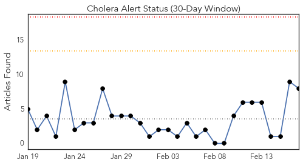
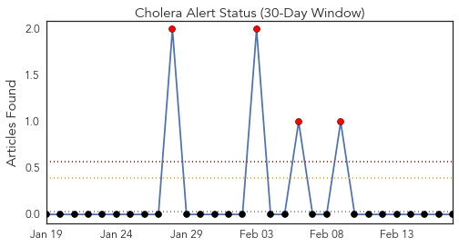
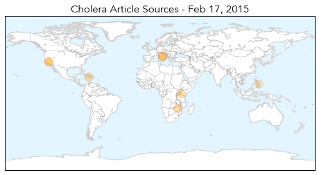
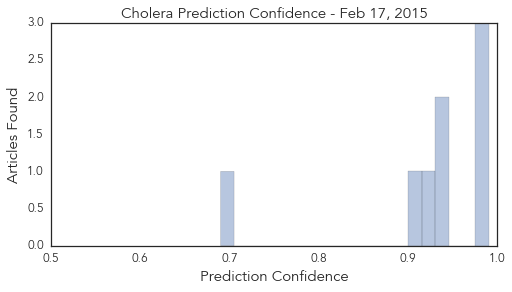

Toggle navigation
Early Warning
Daily Alerts
Cholera
Feb 17, 2015
Compare to:
-
Dengue Fever
Hemmorhagic Fever
Mold/Fungal Infection
Influenza
Meningitis
Pertussis / Whooping Cough
Middle East Respiratory Syndrome
Hepatitis
Chikungunya
Yellow Fever
Bubonic Plague
West Nile Virus
Swine Flu
Ebola
Measles
Unknown
Mumps
30 Day Trends
Web: 0
alerts
, 0
warnings
Twitter: 0
alerts
, 0
warnings
Top Articles:
0.991
Comment: Heed council's cholera warnings
0.988
Kenya : For cholera, prevention always better than cure
0.980
UN Official Advises Sustained Fight Against Cholera in Haiti
0.943
Italian cemetery could preserve cholera DNA
0.936
Scientists Seek Cholera DNA in Tuscan Cemetery
0.926
Italian Cemetery Could Preserve Cholera DNA
0.907
Italian Cemetery Could Preserve Cholera DNA
0.690
Danao City Cholera outbreak, Health exec confirms water contamination
Top Tweets:
No tweets found for Feb 17, 2015
Web/News Articles

Tweets

Article Locations

Article Confidences
